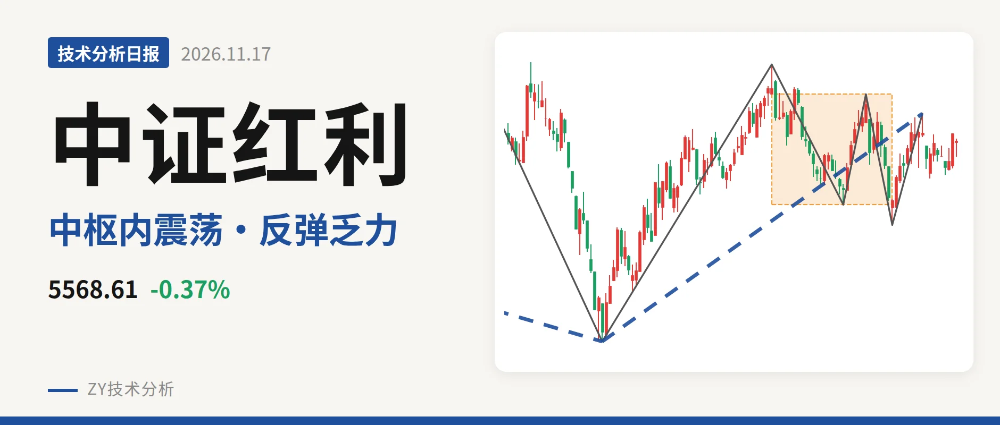

中证红利｜反抽未过5701，回踩看5328结构

最近日线中枢 5386.04—5701.06点，收盘位于中枢之内
一句话：当前仍是日线中枢震荡，反弹未站稳上沿5701点
🧭 走势结构：线段未定，日线按中枢震荡看待
更大级别上，2022年11月至2024年10月8日上涨段、2024年10月8日至2026年6月30日下跌段、6月30日至11月4日上涨段都还没有结束，线段级别没有给出单边方向。日线线段中，2025年7月23日至2026年6月30日下跌线段还在延续，6月30日以来的上涨线段也没有走完，两者相互牵扯。落到日线笔，10月23日以来的回升在11月4日见高5646.01点后未能继续成笔，11月17日收于5568.61点，因此当前不是单边上涨，而是日线中枢震荡。

📍 中枢与位置：仍在中枢内，中轴小幅下移
最近一个日线笔中枢为9月1日至10月23日的5386.04—5701.06点，最新收盘5568.61点位于中枢内部，距上沿约132点，距下沿约183点，略高于中轴5543.55点。与2025年8月4日至2026年4月30日中枢中轴5579.23点相比，最近中枢中轴下移约36点，上下沿同时外扩，结构上更像中枢扩展而非单边离开。
🧾 买卖点：日线买点未破坏，级别由低点决定
近阶段日线笔级别买点依次为6月30日一买4995.49点、9月29日二买5386.04点、10月23日类二买5328.30点。10月23日类二买出现后，反弹到11月4日5646.01点，未重新站上最近中枢上沿5701.06点，随后回落到5460.31点，仍在类二买低点之上。若后续跌破5328点，这个类二买只对应更小级别；不破则仍按日线类二买看待。

⚡ 背驰：回踩新低不新弱，类二买有底背驰
最值得比较的是9月1日至9月29日下跌笔与10月14日至10月23日下跌笔。前者从5786.14点回到5386.04点，绿柱面积561，DIF低点-32.7；后者从5701.06点回到5328.30点，价格创了更低低点，但绿柱面积仅53，DIF低点抬到-20.4。低点下移、面积与DIF同步修复，属于新低不新弱，这是10月23日类二买的背驰基础。当前11月5日以来的回落尚未成笔，暂不能与9月1日下跌笔做同级别对比。最新DIF 1.8、DEA -1.3、柱6.2，DIF虽回到零轴上方，柱体还小，反弹难言转强。
🔎 关键位置观察：5701与5386定强弱
日线结构上，反弹若重新站上5701点上方，6月30日以来的上涨线段更可能延续，2025年7月23日以来的下跌段就只是中枢扩展；若反抽不能站上5701点，当前仍归于中枢震荡。下方先看5386点附近，这是最近中枢下沿；跌回5386点下方则看5328点一线。只要能守在5328点上方，结构暂按中性略偏强处理；跌破5328点，日线类二买级别下移，反弹结构被破坏，转弱。
⚠️ 本文为基于公开行情数据的缠论技术结构记录，由程序自动计算并生成，仅供学习交流，不构成任何投资建议。市场有风险，投资需谨慎。